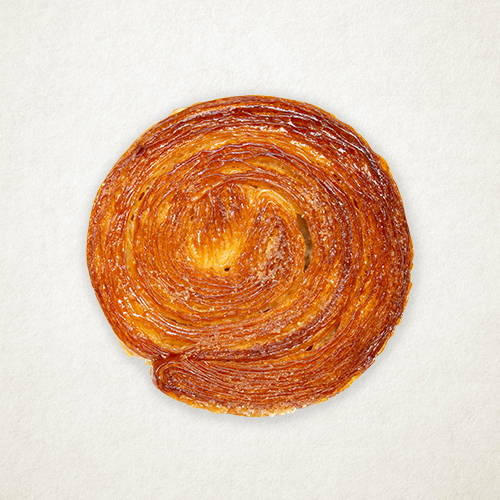

1/3
메론빵
메론과 성심당 빵의 완벽한 만남 [메론빵]
입안에서 식초가 터지는 듯 상큼한 메론과 생크림의 부드러움이 가득한 이 빵은 냉동보관 후 차갑게 얼려먹으면 아이스크림처럼 시원하고 상쾌한 맛을 즐길 수 있습니다. 또한, 상온에서 즐기면 메론과 크림의 풍미를 더욱 품격있게 즐길 수 있어, 언제든 당신의 입맛을 사로잡을 것입니다.
3,800원
유통기한
보관방법
배송비
사이즈
당일섭취 권장상품
직사광선을 피하고 서늘한 곳 보관
선불 3000원
10 * 10
같은 카테고리 인기 제품
알레르기정보
메론, 밀, 우유, 난류(가금류), 대두, 난류(가금류), 우유, 메밀, 아황산류, 대두, 토마토, 호두, 땅콩, 닭고기, 쇠고기, 밀, 새우, 돼지고기, 오징어, 잣과 같은 시설에서 제조하고 있습니다.
성분표시
메론, 우유 (원유: 국산), 밀가루 (강력: 미국/캐나다산), 휘핑크림 (원산지: 영국)
매장지도 보기